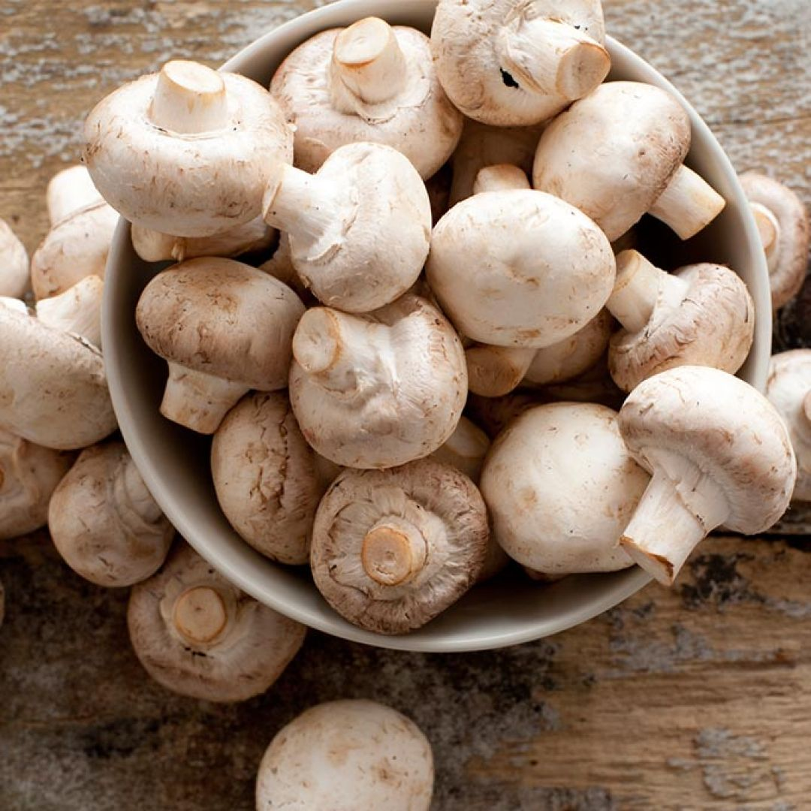

A Cog Solutions desenvolve um protótipo com sensores conectados a um Arduino para acompanhar a umidade do ar, do substrato e da temperatura no cultivo de Champignon Paris, ajudando a identificar variações antes que prejudiquem a produção.
O Champignon é composto por cerca de 90% de água. Flutuações mínimas de umidade no substrato ou no ar provocam perdas drásticas na produção.
Fase em que o micélio coloniza o substrato, antes da frutificação.
Faixa ideal para o surgimento dos cogumelos, monitorada em tempo real.
Favorece o aparecimento de pragas e reduz a qualidade da colheita.
Do sensor até o painel de acompanhamento.
Sensores medem a umidade do ar, do solo e da temperatura dentro da estufa a cada poucos minutos.
As leituras são enviadas para um banco de dados, onde ficam guardadas.
Os dados são exibidos em um painel simples, para acompanhar a umidade ao longo do tempo.

Monitoramento contínuo evita variações que prejudicam o cultivo.
Dados guardados permitem acompanhar tendências da estufa.
Solução simples, pensada para ser testada em bancada.
Projeto desenvolvido pelo Grupo 5 - Pesquisa e Inovação.